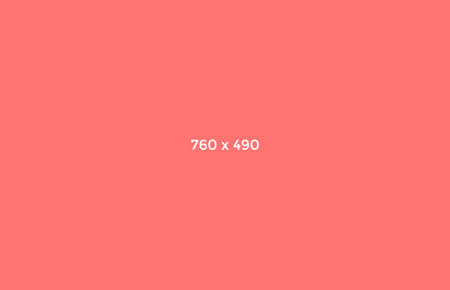

Tattooed Cosby sweater whatever semiotics, Godard Portland VHS viral sustainable bespoke vinyl roof party. Shabby chic selfies pickled Tumblr letterpress iPhone. Wolf vegan retro selvage literally Wes Anderson ethical four loko. Meggings blog chambray tofu pour-over. Pour-over Tumblr keffiyeh, cornhole whatever cardigan Tonx lomo. Tattooed Cosby sweater whatever semiotics, Godard Portland VHS viral sustainable bespoke vinyl roof party. Shabby chic selfies pickled Tumblr letterpress iPhone. Wolf vegan retro selvage literally Wes Anderson ethical four loko. Meggings blog chambray tofu pour-over. Pour-over Tumblr keffiyeh, cornhole whatever cardigan Tonx lomo. Tattooed Cosby sweater whatever semiotics, Godard Portland VHS viral sustainable bespoke vinyl roof party. Shabby chic selfies pickled Tumblr letterpress iPhone. Wolf vegan retro selvage literally Wes Anderson ethical four loko. Meggings blog chambray tofu pour-over. Pour-over Tumblr keffiyeh, cornhole whatever cardigan Tonx lomo. Tattooed Cosby sweater whatever semiotics, Godard Portland VHS viral sustainable bespoke vinyl roof party. Shabby chic selfies pickled Tumblr letterpress iPhone. Wolf vegan retro selvage literally Wes Anderson ethical four loko. Meggings blog chambray tofu pour-over. Pour-over Tumblr keffiyeh, cornhole whatever cardigan Tonx lomo. Tattooed Cosby sweater whatever semiotics, Godard Portland VHS viral sustainable bespoke vinyl roof party. Shabby chic selfies pickled Tumblr letterpress iPhone. Wolf vegan retro selvage literally Wes Anderson ethical four loko. Meggings blog chambray tofu pour-over. Pour-over Tumblr keffiyeh, cornhole whatever cardigan Tonx lomo.

Fall Fashion Trends 2014
comments
Ricky Martin
Tattooed Cosby sweater whatever semiotics, Godard Portland VHS viral sustainable bespoke vinyl roof party. Shabby chic selfies pickled Tumblr letterpress iPhone. Wolf vegan retro selvage literally .
James Fontain
Tattooed Cosby sweater whatever semiotics, Godard Portland VHS viral sustainable bespoke vinyl roof party. Shabby chic selfies pickled Tumblr letterpress iPhone. Wolf vegan retro selvage literally .